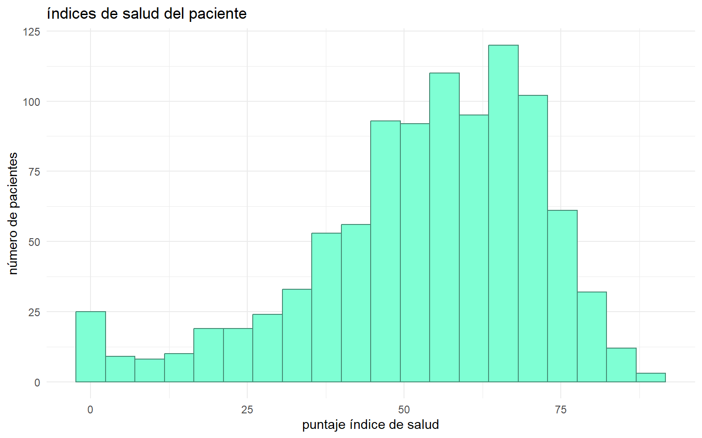
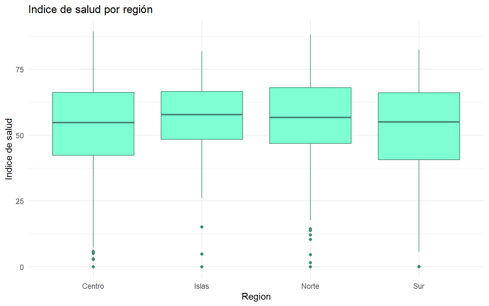
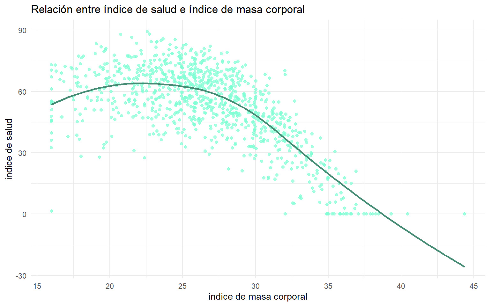
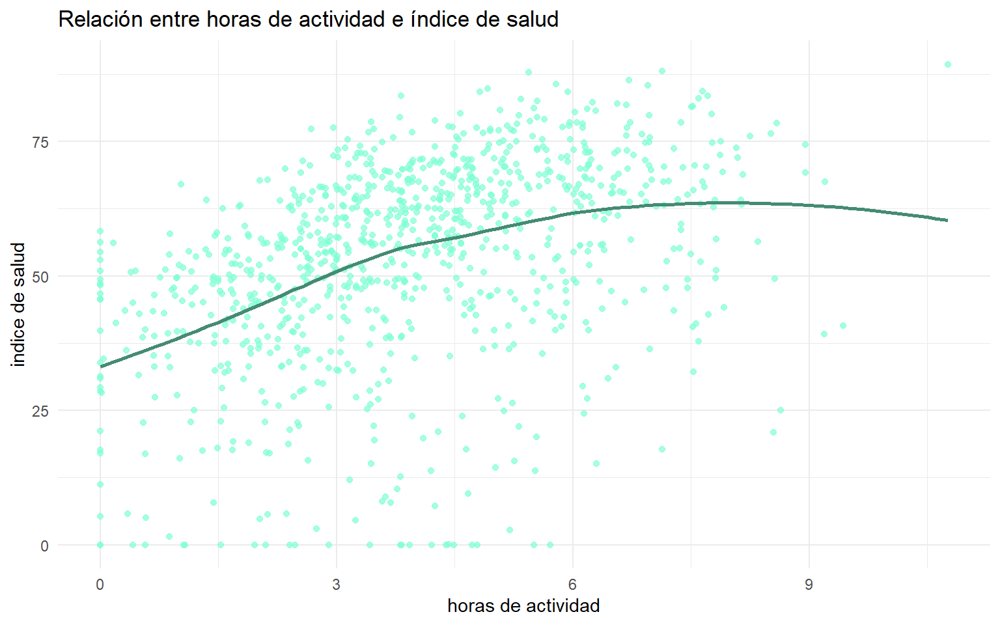
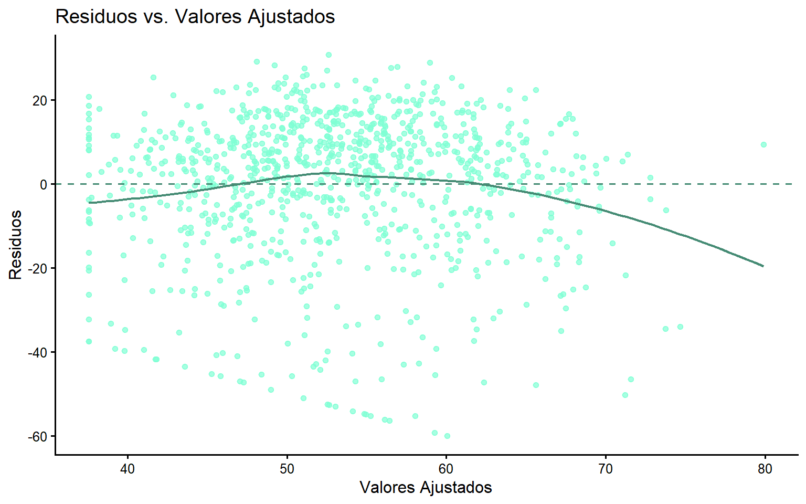
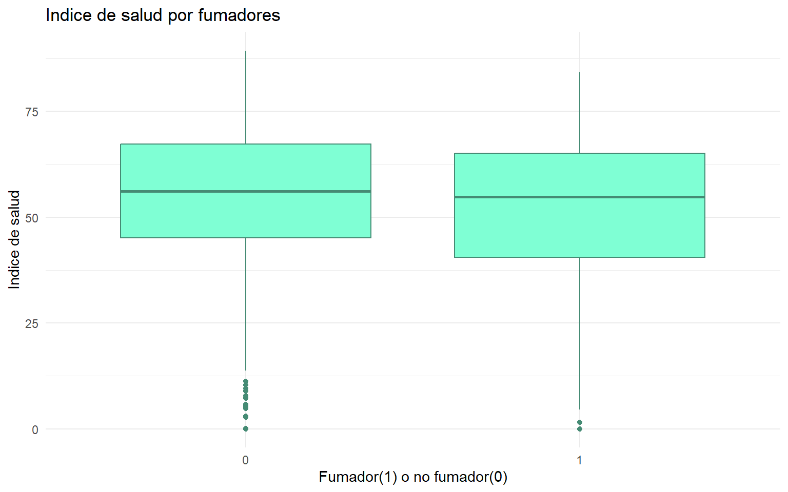
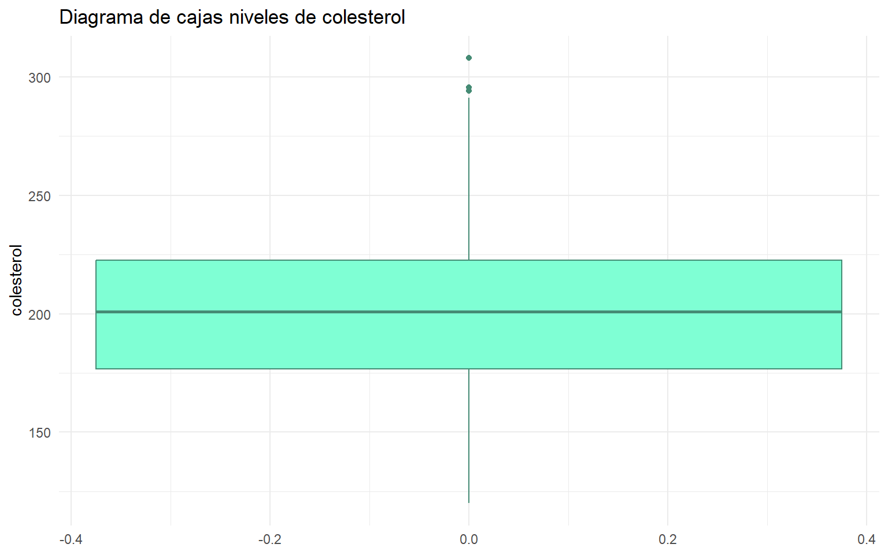
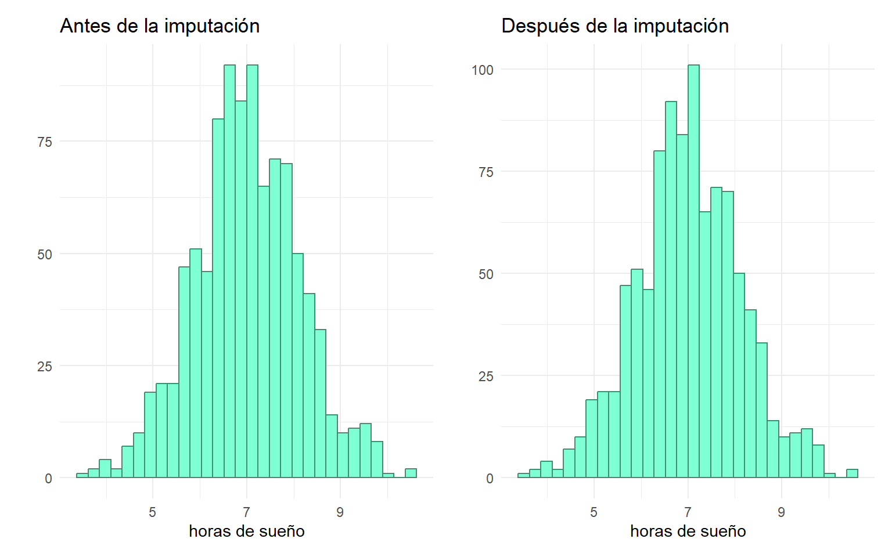
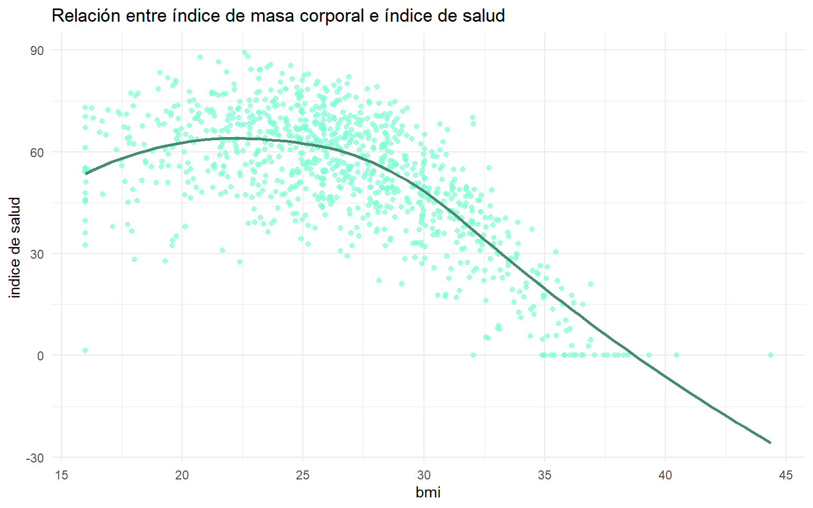
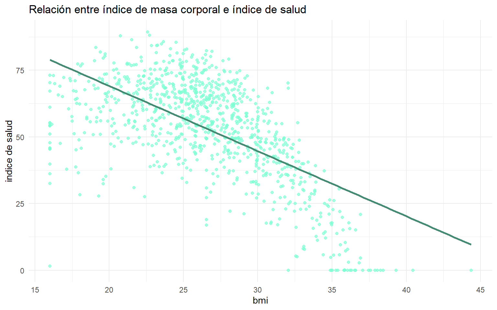

El objetivo de este trabajo es llevar a cabo un análisis estadístico a partir de una base de datos de pacientes hospitalarios. En primer lugar, leeremos el conjunto de datos y la visulizaremos los primeros cinco registros con el fin de confirmar que la lectura de la información se ha ejecutado correctamente.
Para comenzar con el estudio primero calcularemos la media, mediana y desviación típica de la variable health_score (indice de salud) de los pacientes.
Valor
Media 53.10447
Mediana 55.90500
Desviación típica 18.62233
Media: La media mide el promedio de la variable. Se calula como la suma de los valores dividido entre la dimensión de la muestra. En este caso se ha obtenido que los pacientes siguen un indice de salud global promedio a 53.1045.
Mediana: La media es el valor que ocupa la posición central cuando los ordenamos los datos de menor a mayor. En este caso la tendencia central es 55.905
Desviación típica: La desviación típica mide cuánto se dispersan los valores respecto a la media. Los datos presentan una dispersion de 18.6223 con respecto a la media aritmética.
2.2 1.2. Puntaje de índice de salud.
A continuación se desea ver entre que puntajes se mueven los pacientes, para ello hemos realizado un histograma de la varieble índices de salud en 20 intervalos.
Code
ggplot(health_df, aes(x = health_score)) +geom_histogram(bins =20, fill ="aquamarine1", color ="#458B74") +labs(title ="índices de salud del paciente",x ="puntaje índice de salud",y ="número de pacientes") +theme_minimal()

Como podemos observar, la mayoría de los valores se concentran entre 45 y 75 puntos, con una mayor frecuencia alrededor de los 65 puntos. También podemos ver una cola hacia los valores más bajos, donde hay menos observaciones. También se aprecia que existen algunos pacientes con puntuaciones muy bajas, incluso cercanas a 0.
En general, los valores se concentran en los niveles medios-altos del índice de salud, aunque existe cierta variabilidad entre los pacientes.
2.3 1.3. Distribucion de frecuencias relativas de los pacientes por sexo.
En este apartado queremos calcular la frecuencia relativa de los pacientes por sexo.
La frecuencia relativa mide el número total de veces que aparece una categoria (frecuencia absoluta) respecto al número total de observaciones.
-Mujeres: Las muejeres presentan una frecuenta relativa de \(0,524\). -Hombres: Los hombres presentan una frecuencia relativa de \(0,462\). -Otros: La personas que no han expecificado su sexo presentan una frecuencia relativa de \(0,014\).
2.4 1.4. Diagrama de cajas de indice de salud por región
A continuación, se compara el índice de salud según la zona en la que viven los pacientes: norte, sur, centro o islas; mediante un diagrama de cajas. Esta representación gráfica permite observar las diferencias en la distribución de la variable entre la zona de residencia de los pacientes, así como identificar posibles discrepancias en sus niveles de salud.
Code
ggplot(health_df, aes(x =factor(region), y = health_score)) +geom_boxplot(fill ="#7FFFD4", color="aquamarine4") +labs(title ="Indice de salud por región",x ="Region",y ="Indice de salud") +theme_minimal()

En el gráfico se observa que las medianas son bastante similares, situándose aproximadamente entre 55 y 58 puntos, por lo que el nivel central del índice de salud es parecido en todas las regiones. Sin embargo, podemos identificar varios valores atípicos inferiores, especialmente en las regiones centro, islas y el norte, correspondientes a pacientes con índices de salud muy bajos.
2.5 1.5. Diagrama de dispersion entre índice de salud e índice de masa corporal
A continuación queremos saber si hay una relación existente entre el índice de salud de los pacuentes y el índice de masa corporal.
Code
ggplot(health_df, aes(x = bmi, y = health_score)) +geom_point(alpha =0.7, color="#7FFFD4") +geom_smooth(method ="loess", se =FALSE, color ="#458B74") +labs(title ="Relación entre índice de salud e índice de masa corporal",x ="indice de masa corporal", y ="indice de salud") +theme_minimal()
`geom_smooth()` using formula = 'y ~ x'
Warning: Removed 9 rows containing non-finite outside the scale range
(`stat_smooth()`).
Warning: Removed 9 rows containing missing values or values outside the scale range
(`geom_point()`).

Como se puede observar, a medida que el índice de masa corporal (bmi) va aumentando, el índice de salud de los pacientes tiende a disminuir, lo que la existencia de una relación negativa entre ambas variables.
2.6 1.6. Matriz de correlaciones entre variables numéricas.
Deseamos calcular la correlación entre las variables numéricas de nuestro modelo, para ello hemos calculado la matriz de correlaciones de Pearson y la hemos representado graficamente mediante un mapa de calor.
La correlación se mueven entre valores de [-1,1], donde los valores negativos próximos al -1 marcan una relación inversa y los valores positivos cercanos al 1 una directa.
En la gráfica se puede ver como en general la correlación entre las variables es debil y cercana al cero. Sin embargo, podemos destacar la relación entre systolic_bp (presión arteriar sistólica) y alcohol_unites (unidades de alcohol) con una correlación de -0.08; así como med_adherence (nivel de adherencia al tratamiento) con income (ingresos anuales) con un valor de -0.07. Por otro lado, también cabe destacar la relación positiva entre la variable age con comorbidities (número de comordidades diagnosticadas) y med_adherence con valores de 0.05 y 0.06 respectivamente.
2.7 1.7. Gráfico de dispersión entre horas de actividad e indice de salud
A continuación estudiaremos la relción exitente entre la variable activity_hours (horas de actividad) y health_score.
Code
modelo_estudio=lm(health_score~activity_hours, health_df)ggplot(health_df, aes(x = activity_hours, y = health_score)) +geom_point(alpha =0.7, color="#7FFFD4") +geom_smooth(method ="loess", se =FALSE, color ="aquamarine4") +labs(title ="Relación entre horas de actividad e índice de salud",x ="horas de actividad", y ="indice de salud") +theme_minimal()
`geom_smooth()` using formula = 'y ~ x'
Warning: Removed 9 rows containing non-finite outside the scale range
(`stat_smooth()`).
Warning: Removed 9 rows containing missing values or values outside the scale range
(`geom_point()`).

Code
# Extraer residuos y valores ajustadosdatos_diagnostico <-data.frame(residuos =residuals(modelo_estudio),valores_ajustados =fitted(modelo_estudio))# Gráfico de Residuos vs. Valores Ajustados con ggplot2ggplot(datos_diagnostico, aes(x = valores_ajustados, y = residuos)) +geom_point(color ="aquamarine", alpha =0.7) +geom_hline(yintercept =0, color ="aquamarine4", linetype ="dashed") +geom_smooth(method ="loess", se =FALSE, color ="aquamarine4", linewidth =0.8, formula = y ~ x) +labs(title ="Residuos vs. Valores Ajustados",x ="Valores Ajustados",y ="Residuos" ) +theme_classic(base_size =12)

Como podemos ver en la gráfica, existe una correlación positiva entre ambas variables, donde a medida que aumentan las horas actividad de un paciente, también aumentará su índice de salud.
-Linealidad: Pese a que en la gráfica se puede estudiar una relación entre ambas variables, también podemos observar una violación en el supuesto de linealidad. Esta evidencia se ve en la recta que regresión, que presenta una curvatura,lo que indica que el aumento del índice de salud es más notable en niveles bajos de actividad física que en niveles más altos. Sin embargo, la herremienta fundamental para detectar esta violación es mediante la gráfica de residuos frente a los valores ajustados del modelo. En este caso podemos detectar un ligero patrón curvo, lo que nos índica que los residuos no son completamente aleatorios y que se guarda una relación con los predictores.
Para poder corregir esta falta de linealidad se tendría que hacer una trasformación logaritmica sobre las variables y hacer el modelos con estas.
2.8 1.8. Realiza un boxplot de health_score por fumador.
A continuación, se compara el índice de salud según la condición de fumador mediante un diagrama de cajas.
Code
ggplot(health_df, aes(x =factor(smoker), y = health_score)) +geom_boxplot(fill ="aquamarine1", color="aquamarine4") +labs(title ="Indice de salud por fumadores",x ="Fumador(1) o no fumador(0)",y ="Indice de salud") +theme_minimal()

Al analizar la distribución de los índices de salud según la condición de fumador del paciente podemos observar que ambas son practicamente identidas. Ambos grupos presentan una mediana similar cerca del 55, así como unos valores atípicos centrados en la parte inferior de las distribuciones.
2.9 1.9. Identifica posibles valores atípicos en cholesterol y discute si son plausibles en un contexto clínico.
Los valores atípicos, o también llamados outliers, son observación en un conjunto que se desvían drasticamente del patrón general de los datos. Para poder visulizar bien estos puntos se usan gráficos boxplot.
Code
ggplot(health_df, aes(y = cholesterol)) +geom_boxplot(fill ="aquamarine1", color="aquamarine4") +labs(title ="Diagrama de cajas niveles de colesterol",y ="colesterol") +theme_minimal()
Warning: Removed 9 rows containing non-finite outside the scale range
(`stat_boxplot()`).

En los diagramas de cajas los valores atípicos se observan como puntos fuera de la caja tomando valores extremadamente altos o bajos.
En nuestro caso, podemos ver tres puntos atípicos con valores cercanos a los 300 mg/dL; lo que en el contexto clínico pueden ser casos plausibles y relevantes, ya que indican diferentes patologias relacionados transtornos genéticos y patológicos.
2.10 1.10. Calcula la proporción de pacientes con enfermedad controlada.
A continuación calcularemos la proporición de clientes con su enfermedad controlada (disease_controlled), que toma valor 0 si no esta controllada y 1 si sí.
La proporción expresa la frecuencia con la que aparece una variable o característica de interés en relación con el total de elementos de una población o muestra.
En este caso las variables que tienen valores faltantes son en bmi, activity_hours, sleep_hours, stress y cholesterol, que tienen nueve valores nulos cada uno.
Al ver este resultado nos ha sorprendido que todas estas variables tuviesen el mismo número de valores nulos, por lo que hemos hecho una tabla que nos muestras que filas tienen estos valores ausentes por varaible.
Tras identificar las filas en las que aparecen valores faltantes para cada variable, se observó que los datos ausentes no se concentran necesariamente en los mismos registros.
3.2 2.2 y 2.3. Proporción total de valores faltantes sobre el dataset completo y tabla resumen con las variables que presentan missing y el porcentaje de datos ausentes en cada una.
A continuación hemos calculado la proporción total de valores nulos en nuestra base de datos.
Code
## proporción de valores nulos en el data settotal_na=sum(is.na(health_df))total_celdas <-nrow(health_df) *ncol(health_df)prop_total=(total_na / total_celdas) *100cat("proporción de valores nulos:",round(prop_total,4),"%")
proporción de valores nulos: 0.2096 %
Code
## proporcion de valores nulos por variablena_variable=colSums(is.na(health_df))prop_na=(na_variable /nrow(health_df)) *100tabla_na=data.frame(`Proporción en porcentaje`=round(prop_na[prop_na >0], 2))tabla_na
El \(0,2096\%\) de los valores de nuestra base de datos son nulos. Por otro lado, la tabla nos muestra que el \(0,92\%\) de los valores de cada una de las variables analizadas son nulos. Ambos porcentajes son muy bajo si se tiene el cuenta que nuestra base de datos cuenta con casi mil registros, por lo tanto la presencia de valores nulos puede no resultar, al principio, un problema.
3.3 2.4. Aplica una imputación por la media en bmi y calcula de nuevo la media de esta variable.
Una vez detectados los valores faltantes, es necesario aplicar una técnica que permita tratarlos antes de continuar con el análisis. En este caso, imputaremos las variables, un procedimiento que consiste en sustituir los valores ausentes de una o más variables mediante información plausible como la media, mediana u otros métodos. De esta forma, se conserva el tamaño de la muestra y se evita la pérdida de información. Este procedimiento introduce un el error de imputación, debido a la incertidumbre que introducen los valores no observados.
Una de las variables que contienen valores faltantes es bmi (índice de masa corporal), por lo que vamos a imputarlos mediante la media.
A continuación calcularemos la media de nuestra base de datos antes y después de imputarla para ver el cambio realizado.
Code
media_sin_imputar=mean(health_df$bmi, na.rm =TRUE)media_imputada=mean(health_df_imputado$bmi)proptable=matrix(c(media_sin_imputar, media_imputada),ncol =1,dimnames =list(c("Media de la base de datos sin imputar", "Media de la base de datos imputada"),"Valor" ))proptable
Valor
Media de la base de datos sin imputar 26.54881
Media de la base de datos imputada 26.54881
Como podemos observar la media de la variable antes y después de imputarla es igual (26.54881), este resultado de se debe a la baja proporción de valores ausentes en la variable, por lo que al sustituir los datos nulos por la media apenas se modifican las caracteristicas de nuestra muestra.
3.4 2.5. Representa histogramas de sleep_hours antes y después de la imputación por media.
A continuación vamos a imputar mediante la media la veriable sleep_hours y visualizaremos su cambio mediante histogramas.
Code
#histograma antes de la imputaciongrafica_antes=ggplot(health_df, aes(x = sleep_hours)) +geom_histogram(fill ="aquamarine1", color ="aquamarine4") +labs(title ="Antes de la imputación",x ="horas de sueño",y ="") +theme_minimal()health_df_imputado1=health_dfmedia_calculada1=mean(health_df$sleep_hours, na.rm =TRUE)health_df_imputado1$sleep_hours[is.na(health_df_imputado1$sleep_hours)]=media_calculada1#histograma despues de la imputaciongrafica_despues=ggplot(health_df_imputado1, aes(x = sleep_hours)) +geom_histogram(fill ="aquamarine1", color ="aquamarine4") +labs(title ="Después de la imputación",x ="horas de sueño",y ="") +theme_minimal()grafica_antes+grafica_despues
`stat_bin()` using `bins = 30`. Pick better value `binwidth`.
Warning: Removed 9 rows containing non-finite outside the scale range
(`stat_bin()`).
`stat_bin()` using `bins = 30`. Pick better value `binwidth`.

Al igual que en el caso anterior, las gráficas no presentan apenas cambio debido a la baja proporción de valores faltantes en la variable
3.5 2.6. Aplica una imputación por la mediana en stress. Compara los resultados con la imputación por la media.
En este apartado imputaremos la variable stress mediante su mediana.
3.6 2.7. Realiza una imputación condicional: sustituye los valores faltantes de cholesterol por la media de pacientes del mismo grupo de sex.
A continuación imputaremos la variable cholesterol mediante la media de cada sexo. De esta forma, los valores ausentes de las mujeres se reemplazan por la media de colesterol de las mujeres y los de los hombres por la media de colesterol de los hombres. Este método suele puede ser más adecuado que una imputación global si existen diferencias entre grupos.
3.7 2.8. Discute si es razonable suponer que los valores faltantes son MCAR, MAR o MNAR en este contexto de salud.
Los valores faltantes pueden ocurrir por varias razones, desde un fallo en el dispositivo de medición, falta de información por parte de los pacientes, fallos a la hora de almacenar los datos… En este apartado veremos si es plausible considerar si los valores nulos son del tipo MACR, MAR o MNAR atendiendo a al contexto clinico en el que nos encontramos.
-MCAR: Los valores faltantes se producen de forma completamente aleatoria. En el contexto sanitario, esta situación es poco probable ya que en la situación en la que estamos el entorno esta muy controladoy un fallo en la maquinaria u otros instrumentos suele ser poco común. En general este tipo de valores nulos no suelen ser MCAR y suelen ser suposiciones poco realistas.
-MAR: los valores faltantes dependen de otras variables observadas del conjunto de datos. Este caso puede ser posible, por ejemplo, podría ocurrir que algunos pacientes no dispongan de una medida de colesterol porque pertenecen a un determinado grupo de edad o sexo para el que no se realizó la prueba o pacientes con elevados niveles de estres podrían evitar hacer determinadas pruebas que impidan rellernar otras variables en la base de datos.
-MNAR: los valores faltantes dependen del propio valor ausente. Esta caso podría darse, por ejemplo, un paciente con estres podría podría no realizar la prueba de estres por si esto pudiera resultarle perjudicial.
Finalmente hemos llegado a la conclusión de que, en el contexto clínico en el que nos encontramos, los tipos de valores faltantes más posibles son del tipo MAR y MNAR.
3.8 2.9. Ajuste del modelo lineal de las variables health_score y bmi usando solo casos completos. ¿Cuántas observaciones se pierden?
En el bloque anterior creamos la grafica de dispersión de las variables health_score y bmi sin tener en cuenta la presencia de valores nulos en la base de datos.
En este apartado realizaremos el modelo de regresión lineal con nuestra base de datos completa, es decir, sin tener en cuenta los registros que contengan valores nulos en estas variables.
Call:
lm(formula = health_score ~ bmi, data = health_df_completo)
Residuals:
Min 1Q Median 3Q Max
-77.398 -8.964 1.548 10.257 30.420
Coefficients:
Estimate Std. Error t value Pr(>|t|)
(Intercept) 118.01323 2.65358 44.47 <2e-16 ***
bmi -2.44345 0.09839 -24.83 <2e-16 ***
---
Signif. codes: 0 '***' 0.001 '**' 0.01 '*' 0.05 '.' 0.1 ' ' 1
Residual standard error: 14.53 on 965 degrees of freedom
Multiple R-squared: 0.3899, Adjusted R-squared: 0.3893
F-statistic: 616.7 on 1 and 965 DF, p-value: < 2.2e-16
Code
## grafica de regresión ggplot(health_df_completo, aes(x = bmi, y = health_score)) +geom_point(alpha =0.7, color="#7FFFD4") +geom_smooth(method ="loess", se =FALSE, color ="aquamarine4") +labs(title ="Relación entre índice de masa corporal e índice de salud",x ="bmi", y ="indice de salud") +theme_minimal()
`geom_smooth()` using formula = 'y ~ x'

Como pudimos calcular en apartados anteriores, la variable bmi presenta \(9\) valores faltantes, mientras que la variable health_score no contiene ninguno. Por lo tanto, al hacer el modelo de regresión completo hemos perdido nueve observaciones.
Los resultado del modelo muestra como existe una relación negativa entre ambas variables. En concreto, medida que el índice de masa corporal aumenta en una unidad, el índice de salud disminuye en \(-2,443\) unidades.
Además este modelo resulta ser estadisticamente significativo, debido a que tenemos un p-valor pequeño un estadístico F grande. Sin embargo, el coeficiente de determinación \(R^2\) nos indica que el modelo explica el \(38,99\%\) de la variabilidad total, por lo que hay más variables de nuestro modelo que influyen en la variable health_score.
Por otro lado debemos destacar la violación de linealidad en el modelo que se debería resolver con una transforamación en las variables.
3.9 2.10. Repite el modelo anterior pero con el dataset imputado..
A continuación realizaremos otra vez el modelo de regresión sobre el dataset impotado.
Call:
lm(formula = health_score ~ bmi, data = health_df_imputado)
Residuals:
Min 1Q Median 3Q Max
-77.360 -8.972 1.592 10.317 30.459
Coefficients:
Estimate Std. Error t value Pr(>|t|)
(Intercept) 117.97508 2.66898 44.20 <2e-16 ***
bmi -2.44345 0.09898 -24.69 <2e-16 ***
---
Signif. codes: 0 '***' 0.001 '**' 0.01 '*' 0.05 '.' 0.1 ' ' 1
Residual standard error: 14.61 on 974 degrees of freedom
Multiple R-squared: 0.3849, Adjusted R-squared: 0.3843
F-statistic: 609.5 on 1 and 974 DF, p-value: < 2.2e-16
Code
## grafica de regresión ggplot(health_df_imputado, aes(x = bmi, y = health_score)) +geom_point(alpha =0.7, color="#7FFFD4") +geom_smooth(method ="loess", se =FALSE, color ="aquamarine4") +labs(title ="Relación entre índice de masa corporal e índice de salud",x ="bmi", y ="indice de salud") +theme_minimal()
`geom_smooth()` using formula = 'y ~ x'
Al comparar ambos modelos, se observa que los coeficientes apenas varían. El coeficiente asociado a la variable bmi se mantiene identico, mientras que el intercepto pasa de 118,013 en nuestro modelo anterior a 117,975. Del mismo modo, el coeficiente de determinación \(R^2\) disminuye ligeramente de \(38,99\%\) a \(38,49\%\). Estas diferencias son mínimas debido a que la cantidad de datos faltantes era muy reducida.
Por otra parte, al observar el gráfico de dispersión, se asigue apreciando que la relación entre bmi y health_score podría no ser completamente lineal.
4 Bloque 3: Regresion lineal simple y multiple
4.1 3.1. Ajusta un modelo de regresión lineal simple entre índice de salud y bmi e interpreta los coeficientes.
Call:
lm(formula = health_score ~ bmi, data = health_df)
Residuals:
Min 1Q Median 3Q Max
-77.398 -8.964 1.548 10.257 30.420
Coefficients:
Estimate Std. Error t value Pr(>|t|)
(Intercept) 118.01323 2.65358 44.47 <2e-16 ***
bmi -2.44345 0.09839 -24.83 <2e-16 ***
---
Signif. codes: 0 '***' 0.001 '**' 0.01 '*' 0.05 '.' 0.1 ' ' 1
Residual standard error: 14.53 on 965 degrees of freedom
(9 observations deleted due to missingness)
Multiple R-squared: 0.3899, Adjusted R-squared: 0.3893
F-statistic: 616.7 on 1 and 965 DF, p-value: < 2.2e-16
Los resultado del modelo muestra como existe una relación negativa entre el índice de masa corporal (bmi) y el indice de salud (health_score). En particular, el coeficiente asociado a la variable bmi es \(-2,443\), que representa la pendiente de la recta de regresión. Este valor nos indica que por cada unidad de incremento de bmi, el índice de salud disminuye \(-2,443\) unidades
Además este modelo resulta ser estadisticamente significativo, debido a que tenemos un p-valor pequeño. Sin embargo, el coeficiente de determinación \(R^2\) nos indica que el modelo explica el \(38,99\%\) de la variabilidad total, por lo que hay más variables de nuestro modelo que influyen en la variable health_score.
Por otro lado debemos destacar la violación de linealidad en el modelo que se debería resolver con una transforamación en las variables.
Finalmente, cabe señalar que al hacer el modelo se han eliminado nueve observaciones devido a la presencial de valores faltantes.
4.2 3.2. Representa el gráfico de dispersión de health_score frente a bmi con la recta ajustada.
En este aparatado representaremos graficamente el modelo anterior mediante un gráfico de dispersión y su recta ajustada.
La recta ajustada se calcula ajustando los predictores del modelo poblacional mediante el método de los minimos cuadrado (MCO), obteniendo la siguiente ecuación: \[\hat{y} = \hat{\beta}\_0 + \hat{\beta}\_1 x\] Que ajustada al contecto de nuestros datos es: \[ \text{health score} = 118.01323 - 2.44345\,\text{bmi} \]
Code
ggplot(health_df_imputado, aes(x = bmi, y = health_score)) +geom_point(alpha =0.7, color="#7FFFD4") +geom_smooth(method ="lm", se =FALSE, color ="aquamarine4") +labs(title ="Relación entre índice de masa corporal e índice de salud",x ="bmi", y ="indice de salud") +theme_minimal()
`geom_smooth()` using formula = 'y ~ x'

4.3 3.3. Calcula el R² del modelo simple anterior. ¿Qué proporción de la variabilidad explica el IMC?
En nuestro modelo \(R^2\) es 0.3899, que nos indica que el modelo explica el \(38,99\%\) de la variablidad del modelo. Este bajo porcentaje es debido a que el índice de salud es influido por otras variables que no estan incluidas en el modelo como, por ejemplo, la variable activity_hours como vimos en el apartado Section 2.7
4.4 3.4. Ajusta un modelo de regresión lineal múltiple: health_score∼bmi+activity_hours+sleep_hours ¿Qué variable parece tener un mayor efecto en la salud?
4.5 3.5. Compara los coeficientes de bmi en el modelo simple y en el múltiple. ¿Por qué cambian?
4.6 3.6. Añade stress al modelo múltiple anterior. ¿Mejora el ajuste según el R² ajustado?
4.7 3.7. Interpreta el efecto de la variable categórica smoker cuando se incluye en un modelo múltiple junto con predictores cuantitativos.
4.8 3.8. Ajusta un modelo que incluya age como predictor adicional. ¿Cómo influye la edad en el índice de salud?
4.9 3.9. Realiza un diagrama de residuos del modelo múltiple. ¿Se aprecian patrones que indiquen falta de linealidad?
4.10 3.10. Explica en qué situaciones en el ámbito de la salud sería más adecuado usar un modelo múltiple en lugar de uno simple.